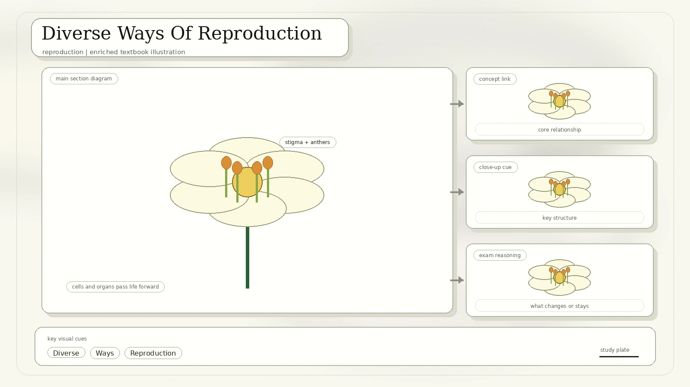
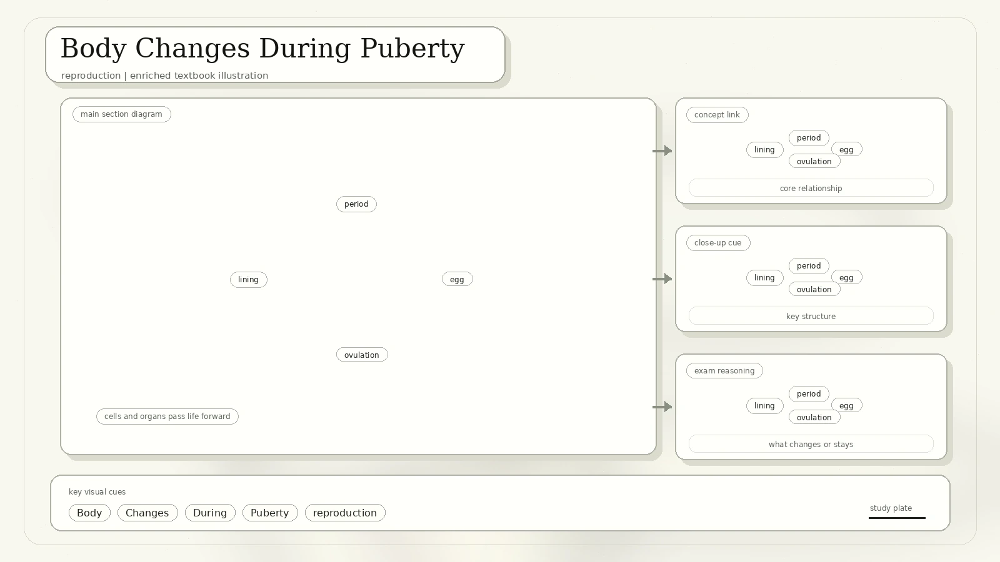
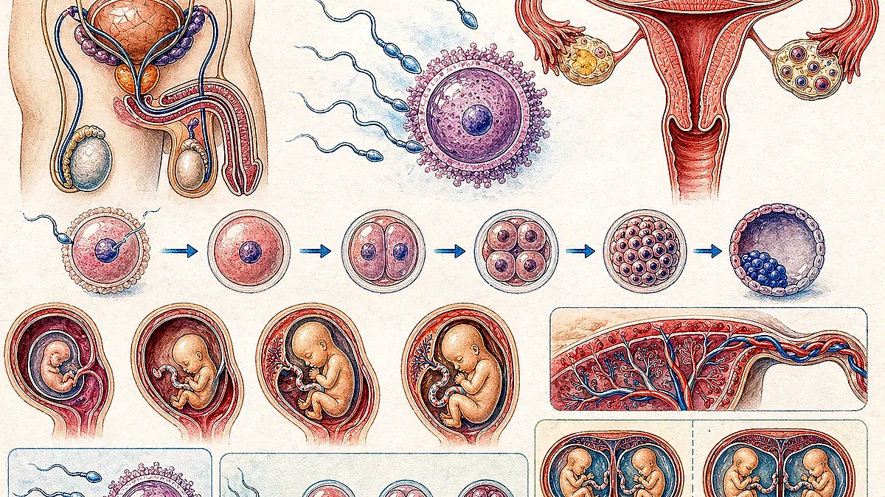
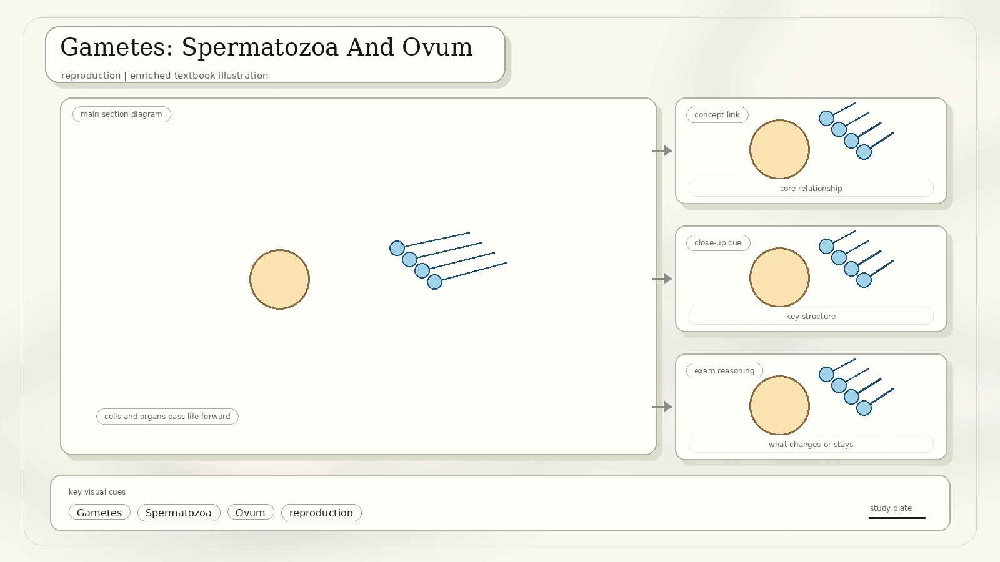
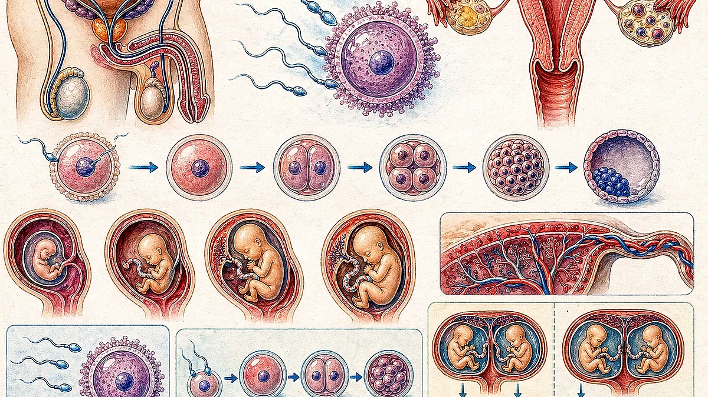
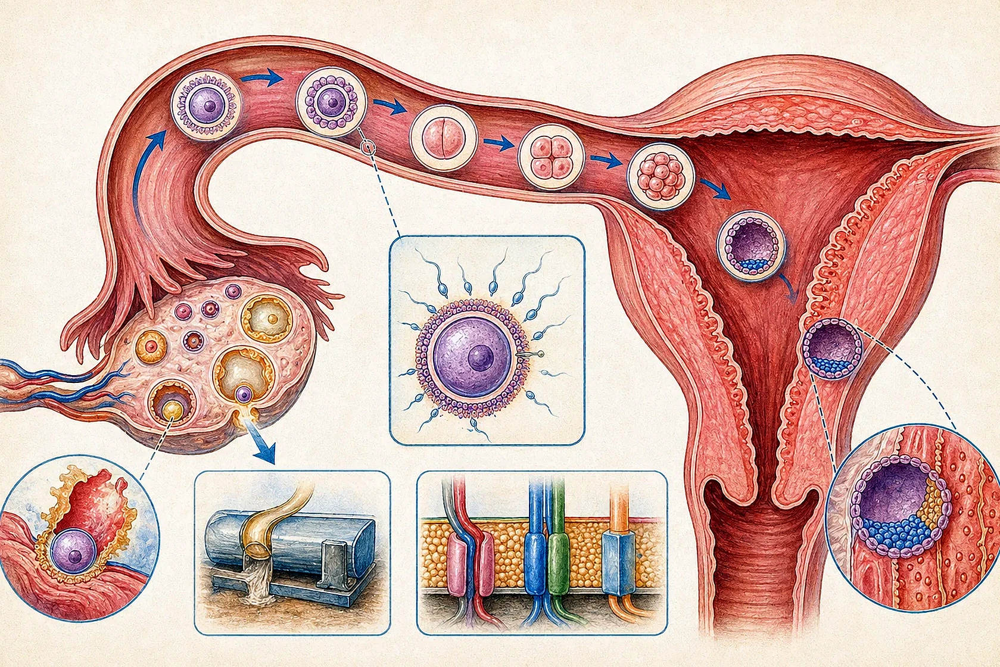
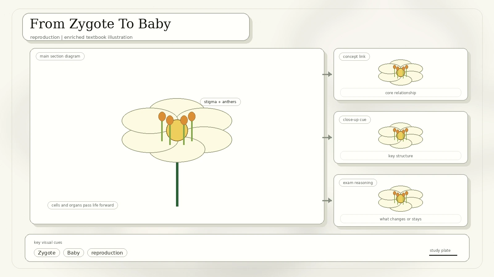
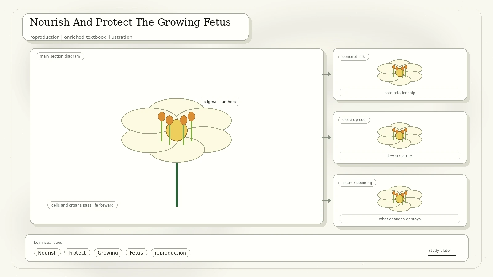
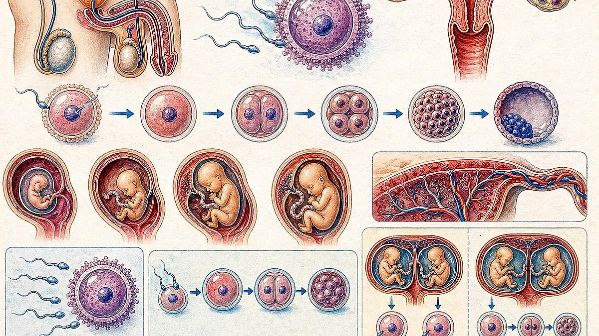

Diverse Ways Of Reproduction
Reproduction produces new individuals and passes genetic information to the next generation. The scan begins with three less-familiar strategies: hermaphroditism, binary fission, and parthenogenesis.

Each individual has both male and female reproductive organs. Earthworms can fertilise each other, and each individual lays eggs.
One cell duplicates its genetic material and divides into two equal cells. Many protists, such as amoeba, use this method.
A form of asexual reproduction where offspring develops from an unfertilised egg cell. Some oribatid mites reproduce this way.
Body Changes During Puberty
Humans show biological and physiological sex differences involving chromosomes, hormones, and anatomy. The scan points to the pituitary gland, ovaries, and testes as important hormone-related structures.

Underarm hair and pubic hair appear. Body shape and reproductive function mature.
Breast growth, hip growth, menstruation, facial hair, voice change, and ejaculation are shown as puberty-linked changes.
Human Reproductive Organs
The main male reproductive organs named are the testes, which produce sperms, and the penis, through which sperms leave the body. The main female parts named are a pair of ovaries, the uterus, and the vagina.

| System | Structures Labelled In The Scan | Core Function |
|---|---|---|
| Male | Bladder, glands, sperm duct, urethra, penis, testis, foreskin, scrotum. | Produce sperm, add fluid to make semen, and deliver sperm out of the body. |
| Female | Oviduct, ovary, uterus, cervix, bladder, urethra, vagina. | Produce ova, receive sperm, support fertilisation, and support embryo and fetal development. |
Gametes: Spermatozoa And Ovum
Gametes are sex cells. Sperm and ova are haploid, meaning they contain one set of chromosomes. Fertilisation restores the paired chromosome set in the zygote.

Spermatozoon
- Consists of a head, middle piece, and tail.
- The head contains an acrosome, an enzyme-containing sac.
- Acrosome enzymes help break down the outer membrane of the ovum.
- The head has a small amount of cytoplasm and a large haploid nucleus.
- The middle piece contains many mitochondria arranged spirally to provide energy.
- The flagellum, or tail, beats to propel the sperm toward the egg.
Ovum
- The female gamete is a large cell with abundant cytoplasm.
- It has a large nucleus containing a haploid set of chromosomes.
- It is surrounded by a plasma membrane and an outer membrane.
- It contains nutritional elements and molecules such as RNA to support early development.
The Monthly Cycle
Only one egg is typically produced each month. At birth, immature eggs have already formed and wait to mature. Female hormones control egg maturation, egg release, and thickening of the uterine lining.

While the egg matures in the ovary, the uterus lining begins thickening and filling with blood.
An egg is released. If fertilised, it can implant in the thickened uterine lining.
Most eggs are not fertilised. They die one or two days after ovulation.
About two weeks later, the uterine lining breaks down and passes out as blood and tissue through the vagina. It usually lasts around one week.
Because the cycle usually takes about a month, the worksheet calls it the monthly cycle.
Fertilisation In Humans
Fertilisation occurs when a sperm nucleus fuses with an egg nucleus, forming a fertilised ovum called a zygote.
Semen contains sperms plus fluids from male sex glands. These fluids provide nutrients, protection, and a swimming medium.
Sperms swim up the oviducts and encounter the ovum.
Acrosome enzymes disperse surrounding cells and help break down the ovum's outer membrane.
Only one sperm enters. The egg membrane changes immediately to prevent other sperms from entering.
The sperm nucleus fuses with the egg nucleus, forming the zygote. Remaining sperms eventually die.

From Zygote To Baby
After fertilisation, the zygote divides into two cells, four cells, eight cells, and then later embryonic stages. The scan notes that fetal heartbeat is detectable in week 6 and that a doctor can see the baby's sex in week 15.

Ectopic pregnancy: the scan defines it as a fertilised egg implanting and growing outside the main cavity of the uterus. Most are tubal, with labelled sites such as ampullary, isthmic, interstitial, fimbrial, ovarian, abdominal, cervical, intramural, and caesarean-scar locations.
Nourish And Protect The Growing Fetus
The placenta is a temporary organ connecting the developing fetus to the uterine wall by the umbilical cord. It allows nutrient uptake, waste removal, and gas exchange through the mother's blood supply.

The fetus is surrounded by a membrane called the water bag, filled with amniotic fluid. The fetus floats in the pool of liquid, which protects it from sudden shocks.
The scan compares monotremes, marsupials, and placental mammals. The quiz's key idea is that nourishment is provided to the developing embryo in different ways before birth.
How Twins Are Formed
The scan compares fraternal and identical twins, including whether embryos implant separately and whether placenta and inner sacs are shared.

Two eggs are released from ovaries. Each egg is fertilised by a separate sperm. Each embryo implants in the womb separately, usually with separate placentas and separate inner sacs.
One egg is released and fertilised by one sperm. The early embryo splits. Depending on timing, twins may have separate or shared placenta and inner sacs.